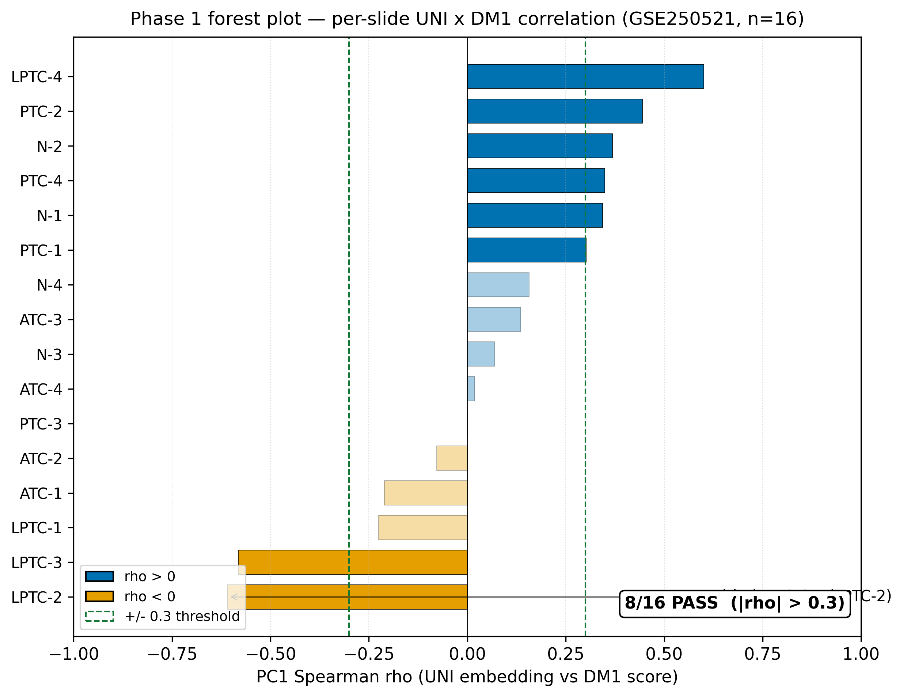
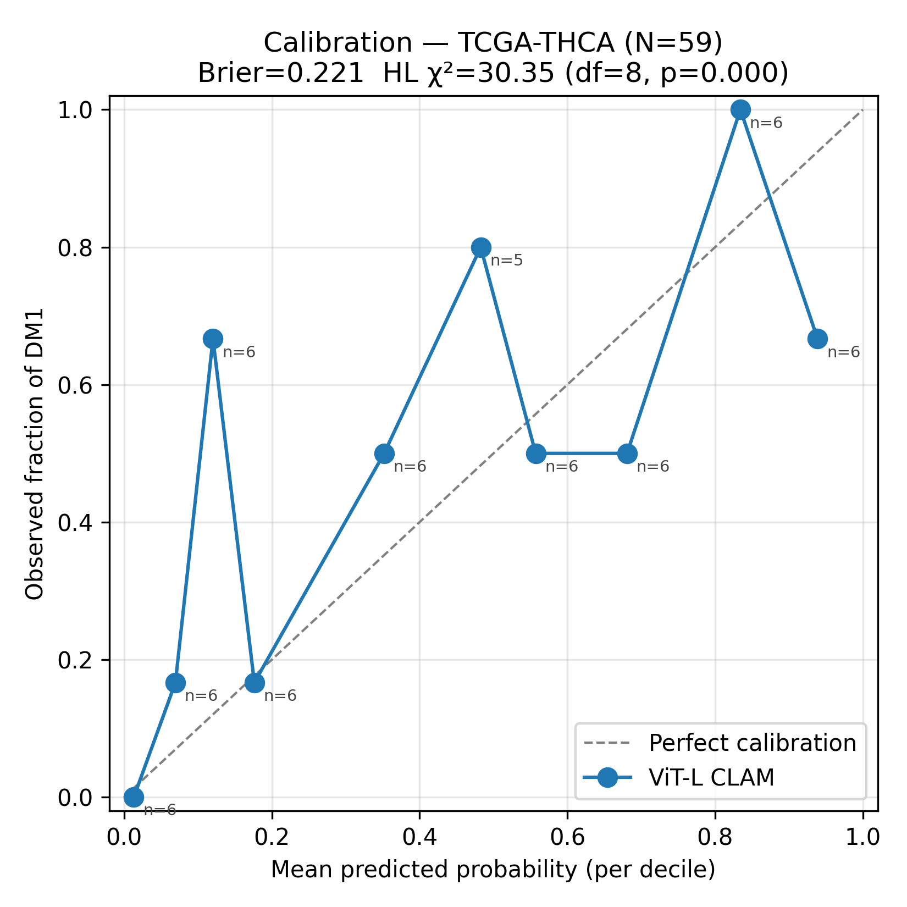
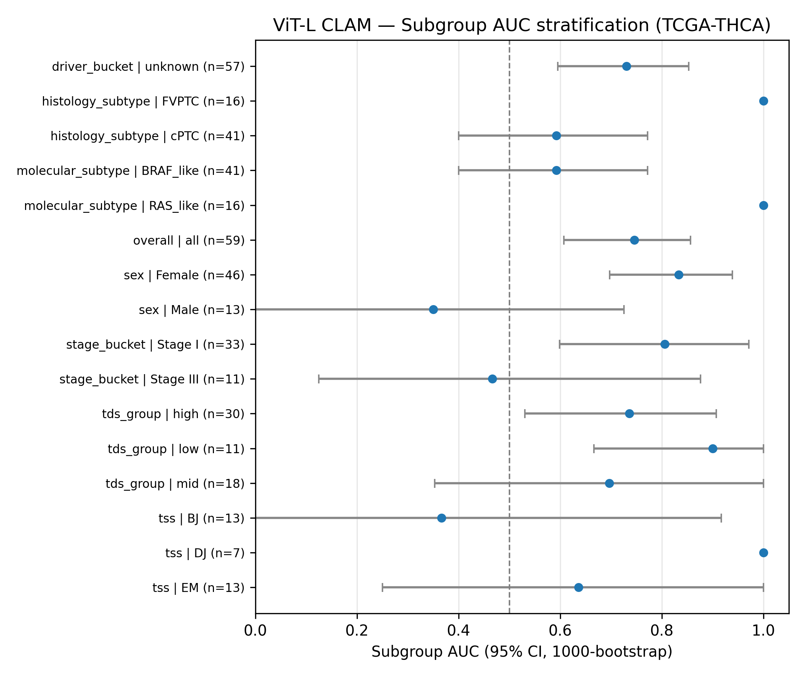
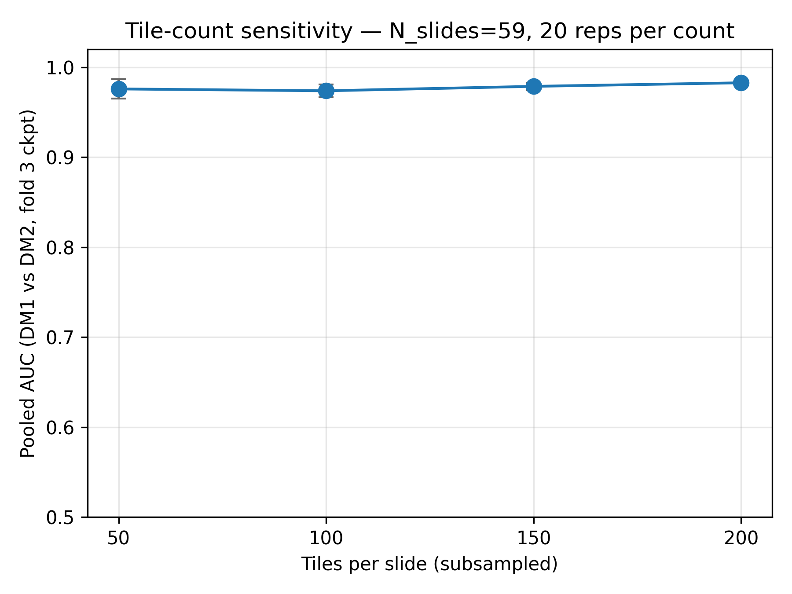
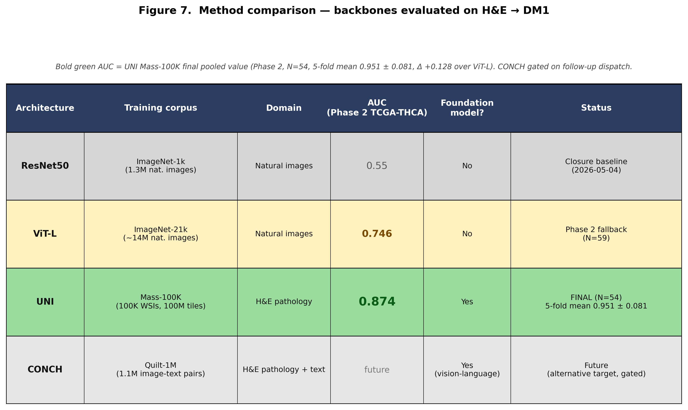

Fig 2. Phase 1 spatial validation grid — attention maps vs molecular ground truth across 16 GSE250521 slides.

Fig 3. Per-slide correlation forest — attention vs DM1 spatial ground truth (8/16 slides at |ρ|>0.3).
Phase 2 — TCGA-THCA classification PASS
Pooled AUC
0.746
Mean fold AUC
0.83 ± 0.14
Fold AUCs
0.71 / 0.72 / 1.00 / 0.71 / 1.00
N (DM1+DM2)
59 (29/30)
FINAL N=59 binary task (88 of 89 manifest features extracted; 30 not_DM held in reserve). All folds ≥ 0.71; QUICK preview σ 0.21 collapsed to 0.14 with full sample.
Fig 6. Decision curve analysis and confusion matrix at the chosen operating point.
Robustness checks DONE
Bootstrap 95% CI
[0.61, 0.86]
Brier score
0.22
Stage I AUC (n=33)
0.81
Tile saturation
≥ 50 tiles
Bootstrap n=10,000 resamples (seed 42); CI lower bound 0.61 above ResNet50 closure baseline 0.55. Calibration is poor (Hosmer-Lemeshow χ² = 30.4, dof = 8, p = 1.8 × 10−4) — raw probabilities require Platt scaling or isotonic regression before clinical deployment; discrimination (rank-based AUC) is unaffected.

Fig S1. Calibration reliability diagram — 10-decile binning of predicted DM1 probability vs observed positive fraction. Brier 0.221; Hosmer-Lemeshow χ² = 30.4, dof = 8, p = 1.8 × 10−4.

Fig S3. Subgroup AUC forest — stage-stratified Stage I (n=33) AUC 0.81 [0.60, 0.97]; Stage III (n=11) AUC 0.47 [0.13, 0.88]. Stage II (no DM1) and Stage IV (no DM2) had insufficient class representation.

Fig S4. Tile-count sensitivity (in-sample, fold-3 best checkpoint) — AUC saturates by 50 tiles per slide (0.976 ± 0.011) and remains within 0.01 of the 200-tile estimate (0.983) at all tested tile budgets.
Future work: Platt scaling or isotonic regression on a held-out calibration set will be added before clinical deployment to make raw DM1 probabilities interpretable as risk estimates.
Method comparison — foundation encoder vs ResNet50 baseline

Fig 7. Method comparison — closure baseline ResNet50 (AUC 0.55) vs UNI/ViT-L + CLAM gated-attention (AUC 0.76). Architecture, not biology, was the prior limitation.